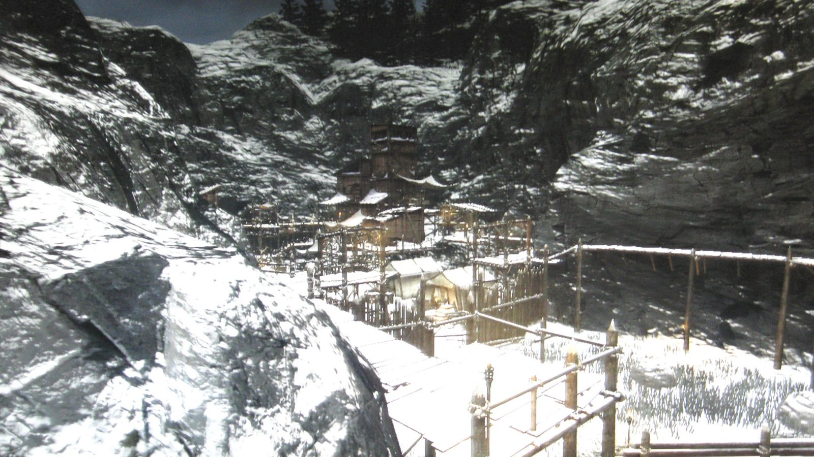
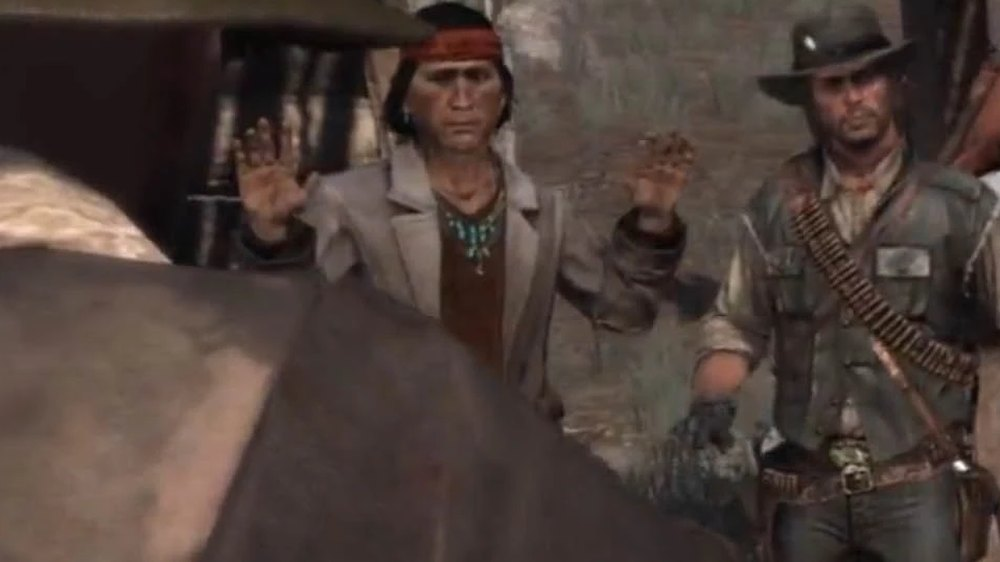
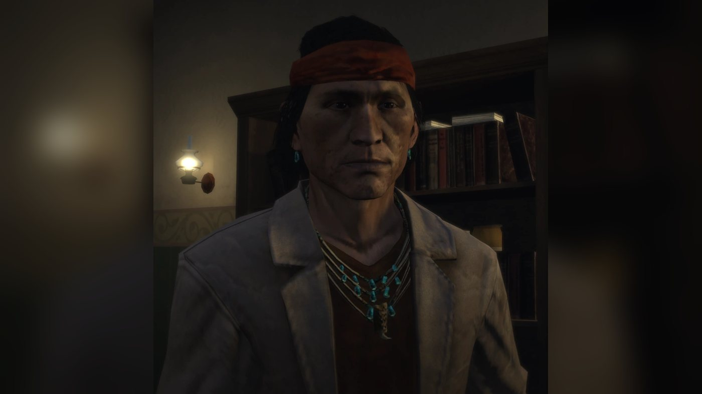
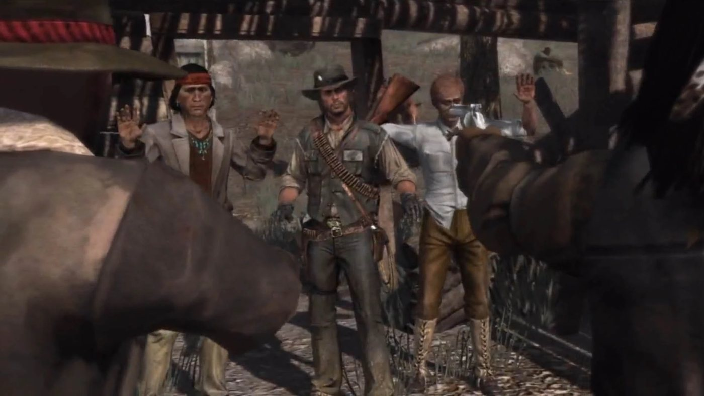
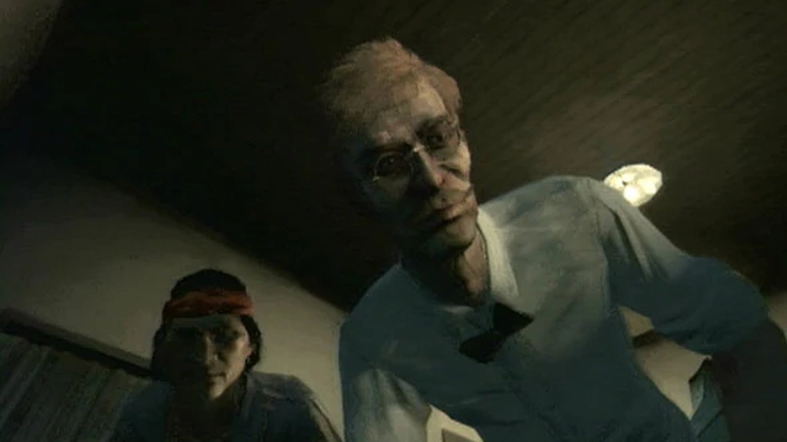
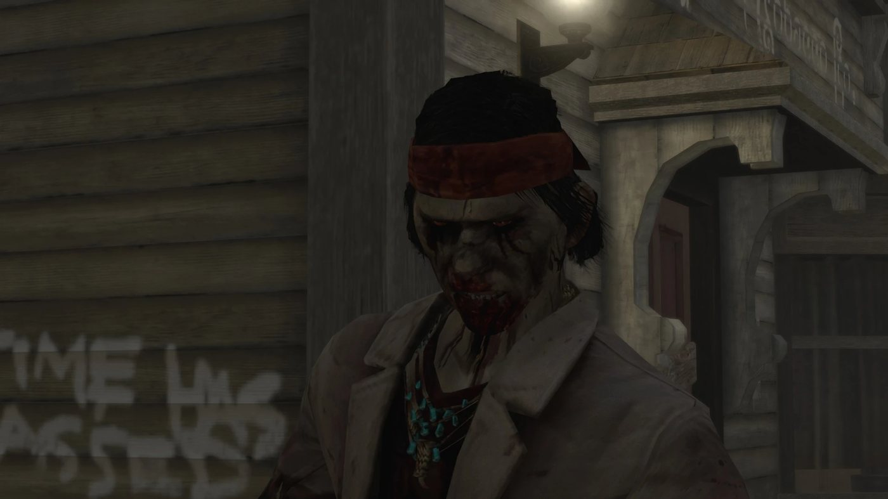

Character · West Elizabeth
Nastas
Nastas is a Native American informant for the Bureau of Investigation in Red Dead Redemption (2010), set in 1911. He grew up on a reservation and went to school. His tip sends Edgar Ross, Archer Fordham and John Marston to the wreck of the Serendipity in search of Dutch van der Linde, where John and Fordham find him beaten and tied up, and walk into an ambush. Ross leaves him with the anthropologist Harold MacDougal in Blackwater.
Nastas then guides John towards Dutch's hideout at Cochinay, and carries him down the mountain after Dutch's shot knocks him out. He sets up a meeting between MacDougal and some of Dutch's men at Bearclaw Camp, where one of them, Enepay, shoots him dead. He is voiced by Benjamin Byron Davis, who also plays Dutch.
- Name
- Nastas (no surname is given)
- Born
- Not given in the game
- Died
- 1911, at Bearclaw Camp, Tall Trees ("For Purely Scientific Purposes"), shot by Enepay
- Origin
- Native American; grew up on a reservation and went to school
- Occupation
- Informant for the Bureau of Investigation; guide
- Region
- West Elizabeth (Blackwater, Tall Trees)
- Enemies
- Dutch van der Linde's gang
- Weapons
- Cattleman Revolver, Double-barreled Shotgun, Repeater Carbine (Red Dead Wiki)
- Games
- Red Dead Redemption (2010); Undead Nightmare (2010, as an undead); multiplayer model (Myths and Mavericks, 2011)
- Voiced by
- Benjamin Byron Davis
Biography
Origins
Nastas is a Native American who lives in West Elizabeth in 1911. The games give no surname, no birth date and no tribe for him, and the notice published after his death gives no surname either (see below). What is known of his past comes from one exchange in Harold MacDougal's office. When the professor addresses him in mock metaphors, Nastas answers that he grew up on a reservation and went to school. According to the Red Dead Wiki, he was taught English at a boarding school.
When John Marston arrives in West Elizabeth, Nastas is an informant for the Bureau of Investigation, whose agents Edgar Ross and Archer Fordham work from Blackwater. The games never show how he came to work for them. On the wreck of the Serendipity, Fordham calls him their informant, and the mission page of "Bear One Another's Burdens" says he is the source who gave the agents Dutch's supposed location.
Red Dead Redemption (1911)
In 1911, the Bureau holds John Marston's wife and son until he has delivered the members of his old gang. After Bill Williamson and Javier Escuella, the last target is Dutch van der Linde, who has formed a new gang in West Elizabeth. Nastas appears in three missions of Red Dead Redemption, all at the start of the third act: "Bear One Another's Burdens", "At Home with Dutch" and "For Purely Scientific Purposes". He is killed in the last of them.
Act III: West Elizabeth
In "Bear One Another's Burdens", Ross tells John in Blackwater that the Bureau knows where Dutch is. Fordham says Dutch is believed to be holed up with a group of renegades near the wreck of the Serendipity, a riverboat. The three men drive there in the agents' automobile, Fordham at the wheel. Ross stays with the car on the cliff while John and Fordham go down on foot. The wreck is quiet, and Fordham says the informant had better not have lied to them. John follows the shouts to an upper deck and finds a man tied up, with a bag over his head according to the mission page. Fordham recognizes Nastas, who warns them that it is a trap. Dutch's men then surround them.
Fordham judges that Nastas cannot walk and orders John to carry him. John fights his way back to the car with Nastas on his shoulder, shooting with one hand. Ross has him laid on the back seat and asks who he is and whether he is a prisoner; Fordham answers that he is the informant and that he speaks English. On the road back, the engine fails and riders from Dutch's gang attack. Ross says they must get the man to a doctor, and holds the riders off with John while Fordham repairs the car. On the drive back, Ross decides to take him to Harold MacDougal, an anthropologist who helps the agents deal with the Native population, to see what he can learn from him. John tells MacDougal that Nastas has been shot in the leg and badly beaten, and Fordham promises to send a doctor.
"At Home with Dutch" opens in MacDougal's office, where the professor has just told John that the blood of natives and of white men looks exactly the same under his microscope. Nastas walks in. MacDougal speaks to him in mock metaphors, then turns to John and explains that "savages" must be addressed simply; Nastas corrects him. He says he can show them where the bandits they are looking for are hiding: Dutch has drawn young men from the reservation, who are turning to bad things, and he is based in the hills at Cochinay. Nastas knows an unguarded way in, brings the horses round and leads the ride.
If the player has not yet unlocked the Manifest Destiny achievement, the three riders pass hunters shooting buffalo on the plains. MacDougal admires the animals; Nastas says the white man will soon wipe them out through overhunting, and that his people hunt to eat, not for sport. MacDougal replies that extinction is a myth refuted by Darwin and that hunting will make the buffalo stronger. In the forest of Tall Trees, Nastas tells MacDougal to enjoy the trees while he can, because they will soon be cut down, and complains that the land is no longer respected. When the professor asks him to talk through this "primal emotion", Nastas tells him not to worry about it.
At the foot of the cliffs, MacDougal says he has no head for heights and rides back to Blackwater. Nastas and John leave the horses and climb. A wooden scaffold breaks under John, and Nastas tells him to find another route while he looks around. The two meet again and Nastas leads John into an old mine shaft. A miner attacks them inside; according to the mission page he cuts Nastas in the arm before Nastas kills him. A cart loaded with dynamite then rolls into the tunnel, and the mission page says three men are waiting outside when the pair escape. Nastas says he is badly hurt. He refuses to slow John down and tells him to go on, saying he will catch up or meet him on the way down.
John climbs alone, silently kills or hogties the scout Helaku and takes his binoculars. Through them he watches Dutch's camp at Cochinay, until Dutch spots him and fires; the bullet hits the binoculars and John falls backwards, knocked out. He wakes in MacDougal's office in Blackwater. MacDougal first says that Nastas and he carried John down, then admits that Nastas heard the shots, climbed up to rescue John and carried him down, while he himself only improvised the escape plan. Nastas says that friends of his are with Dutch. MacDougal wants to reason with the Native members of the gang and save them from disaster; Nastas answers that his people have already lived through many disasters and that all this land was once theirs.
MacDougal answers that his people have brought them civilization, and tells the story of a Yale acquaintance whose father once shot eighteen Natives in an afternoon in Wyoming. Nastas tells him that for a wise man he is very stupid. John leaves the two men to work out right from wrong. MacDougal calls Nastas simple-minded, then backs down as Nastas steps towards him.
In "For Purely Scientific Purposes", MacDougal tells John that Nastas has set up a meeting, which the professor calls a pow-wow between Natives and whites, academics and criminals. Nastas, waiting with the horses, explains that some of Dutch's men have agreed to meet the professor at the Bear Claw cabin, in Tall Trees, and says they are curious to hear what a white man has concluded about their culture from the comfort of his hotel room. He advises MacDougal against asking them for skin samples from the soles of their feet. MacDougal says he is relieved to have the two men with him, Nastas above all. On the way, a grizzly bear crosses the road; MacDougal opens fire, and he and John kill it. Nastas remarks that the bear showed no aggression and would probably have moved on if they had not shot first.
Three of Dutch's men are waiting in the cabin: Enepay, Kosumi and Hinto, as the Red Dead Wiki names them. MacDougal says they come in peace. Enepay answers that such words mean nothing from people like them, who have left his people living like animals in the dirt, and orders them to raise their hands; Kosumi demands their weapons. Nastas protests that this is not what was agreed. Enepay calls him a treacherous snake and shoots him in the head, killing him. John kills Enepay, Kosumi and Hinto, then fights off the rest of the gang around the cabin and escorts MacDougal back to Blackwater through further attacks. On the ride, MacDougal says that his studies, Nastas and the blood samples had led him to believe acculturation was possible, and that he could not have been more wrong.
Issue No. 59 of the Blackwater Ledger goes on sale after the next mission of the strand, "The Prodigal Son Returns (To Yale)". Its Miscellany column carries a notice signed by the professor: "Nastas (Surname Unknown), of Indian descent, has passed away at Bear Claw Cabin in Tall Trees. May you find God, my dear friend. Prof. Harold MacDougal Esq."
Undead Nightmare (non-canon)
Undead Nightmare, an expansion released in October 2010, is not part of the series' canon. Nastas appears in one of its missions, "Curious Tales from Blackwater", as one of the undead. John finds MacDougal alone in a deserted Blackwater, who says he has come back to do more research. The professor goes down an alley to fetch his medical bag; according to the mission page, he says he left his things with Nastas. An undead Nastas attacks him there and devours him. The mission then asks the player to kill or avoid Nastas, MacDougal and the other undead. According to the mission page, if the player spares them, the two can be met again later in the town or near the cemetery.
The undead Nastas bears a bite wound on the neck, according to the Red Dead Wiki.
Personality
A Rockstar character card for Red Dead Redemption, reproduced on the Red Dead Wiki, sums him up in one line: "A Native American unsure about the joys of life on a reservation." In the game, he calls the men he works with "sir", "Professor" and "Mr. Marston".
He corrects Harold MacDougal's assumptions about him, and tells the professor that he is a very stupid man for a wise one (see Quotes). He speaks about the land, the forests and the buffalo, and blames the white man for their loss.
In his own words
When MacDougal greets him with mock metaphors, in "At Home with Dutch": "No, sir. I grew up on a reservation and attended school." On the buffalo hunters met on the way to Cochinay: "But we hunt to eat, not for sport. Soon there will be no buffalo left." Riding into Tall Trees: "Enjoy it while you still can. Soon you will have cut down all of these trees." Then: "There is no respect for the land anymore." Back in Blackwater, when MacDougal wants to save the Natives of Dutch's gang from disaster: "My people have already endured many disasters. Before, this was all our land."
Names
Nastas is the only name the game gives him, and the notice of his death in the Blackwater Ledger gives no surname either (see Biography). According to the Red Dead Wiki, Nastas is a Navajo name meaning "curve-like foxtail grass". In the game, his name is spoken "Nosstas" by John and Fordham and at times "Nastoss" by MacDougal, according to the Red Dead Wiki. The agents mostly call him the informant. In the car, Ross asks who "this savage" is, then calls him "the Indian". Carrying him into MacDougal's office, John calls him a kid: "Kid got shot in the leg, beat up pretty good." Before shooting him, Enepay calls him a snake: "You shut your mouth, you treacherous snake!"
Appearance
He has shoulder-length black hair held by a red headband, and wears a turquoise earring and a turquoise necklace. He wears a pale grey jacket over a dark shirt. According to the Red Dead Wiki, he wears moccasin-style shoes, stitched along the side.
Relationships

John Marston
John carries him off the wreck of the Serendipity, Nastas later carries John down from the cliffs at Cochinay, and John kills the three men who shoot Nastas at Bearclaw Camp (see Biography).

Harold MacDougal
Ross leaves the wounded Nastas with the professor, who later signs the notice of his death in the Blackwater Ledger (see Biography).

Edgar Ross
Ross, who says he cannot communicate with Natives himself, leaves him with MacDougal on the drive back from the Serendipity (see Biography).

Archer Fordham
Fordham, who knows him as the Bureau's informant, recognizes him tied up on the wreck of the Serendipity (see Biography).

Dutch van der Linde
The two men never share a scene; Dutch's men leave Nastas tied up on the Serendipity and later kill him at Bearclaw Camp (see Biography). Benjamin Byron Davis voices both characters (see Development and performance).
Enepay, Kosumi and Hinto
Three Native members of Dutch's gang who wait in the Bearclaw Camp cabin; Enepay shoots Nastas and John kills all three (see Biography). Their names are those given by the Red Dead Wiki.
Guide, weapons and horses
Guide and informant
The Bureau uses him as an informant on Dutch's new gang, and the agents act on his tip at the wreck of the Serendipity (see Biography). He leads John and MacDougal to Cochinay by a route he says is unguarded, finds a way up the cliffs and takes John through an old mine shaft. He arranges the meeting with some of Dutch's men at the Bear Claw cabin (see Biography). He speaks English, as Fordham tells Ross in the car.
Weapons
The English-language Red Dead Wiki lists a Cattleman Revolver, a Double-barreled Shotgun and a Repeater Carbine; the French-language wiki lists only the Cattleman Revolver. In the mine of "At Home with Dutch", he kills the miner who attacks him (see Biography). The wiki's "Murders Committed" list counts this miner as his only kill, in self-defense. According to the Red Dead Wiki, Nastas also owns a carved flute of his own, which he plays well.
Horses
He brings the horses round for John and MacDougal in both of MacDougal's missions. According to the mission page of "At Home with Dutch", his horse is a Tobiano Pinto. The same page notes a glitch in which his Tobiano Pinto sometimes stays at a canter while the other two horses gallop towards Tall Trees. The page of "For Purely Scientific Purposes" notes that his horse and MacDougal's are unusually fast in that mission, faster than an American Standardbred or a War Horse, which makes them hard to keep up with.
In the game
In "Bear One Another's Burdens", the mission fails if John assaults or kills Nastas or lets Dutch's men kill him. While John carries him, Nastas has his own health gauge and John can shoot with one hand only. "At Home with Dutch" and "For Purely Scientific Purposes" fail if John assaults, kills or abandons him or kills his horse. In the second, killing his horse after Nastas is dead still fails the mission, according to its page. According to the Red Dead Wiki, if John shoots an animal on the ride to Cochinay, Nastas calls him a bastard. His body can be looted after his death without any loss of honor or failure: the character page gives four to seven dollars, the mission page around seven.
Missions
Nastas appears in three story missions at the start of the third act of Red Dead Redemption, numbered 42, 44 and 45 in the story order. He gives none of them: the first belongs to Edgar Ross's strand, the next two to Harold MacDougal's. "Bear One Another's Burdens" becomes available after Abraham Reyes's "An Appointed Time" and is the first mission set in West Elizabeth; it unlocks MacDougal's strand, which begins with "At Home with Dutch" and continues with "For Purely Scientific Purposes". He also appears in one mission of Undead Nightmare.
Appearances
| Mission | Act | Nastas's role |
|---|---|---|
| Bear One Another's Burdens | Act III: West Elizabeth | Found tied up in the wreck of the Serendipity; John carries him to Ross's automobile under fire, and the player must keep his health gauge from running out. Mission giver: Edgar Ross. Rewards: High Power Pistol, 150 fame (200 with the Gold Medal) and 25 honor. |
| At Home with Dutch | Act III: West Elizabeth | Guides John and MacDougal to Tall Trees, climbs the cliffs towards Cochinay with John until he is wounded in a mine, then carries the stunned John down. Mission giver: Harold MacDougal. Rewards: Binoculars, 25 honor (50 fame with the Gold Medal); unlocks the A Savage Soul achievement. |
| For Purely Scientific Purposes | Act III: West Elizabeth | Arranges the meeting with Dutch's men at the Bear Claw cabin and is shot dead there by Enepay. Mission giver: Harold MacDougal. Rewards: 25 honor (50 fame with the Gold Medal). |
| Curious Tales from Blackwater | Undead Nightmare | Non-canon. As one of the undead, attacks and devours MacDougal in an alley of Blackwater; the player kills or avoids them both. |
Quotes
The lines below are given in the original English. Mission lines are checked against the transcripts of the Red Dead Wiki. The line said when he is bumped into and the multiplayer lines come from the wiki's list of his lines, as no transcript exists for them.
Red Dead Redemption, Act III
It's a trap!
Bear One Another's Burdens (RDR1, Act III), when Fordham recognizes him on the wreckBut I can show you what you want to see. I know where the group of bandits you seek are hiding. Both of you. Van der Linde has attracted a following of young men on the reservation. They are turning to bad things.
At Home with Dutch (RDR1, Act III), in MacDougal's officeI'll be fine, but you go ahead. I don't want to slow you down.
At Home with Dutch (RDR1, Act III), wounded, outside the mineFor a wise man, you are a very stupid man, mister.
At Home with Dutch (RDR1, Act III), to MacDougal, after the professor's story of the Yale acquaintanceI think they are interested to find out what conclusions a white man [has] reached on hundreds of years of culture and society from the comfort of his hotel room.
For Purely Scientific Purposes (RDR1, Act III), when John asks why Dutch's men would agree to meet the professorThat bear showed no signs of aggression. If we hadn't shot first, it most likely would have ignored us and moved on.
For Purely Scientific Purposes (RDR1, Act III), after the grizzly is killedThis is not what we agreed.
For Purely Scientific Purposes (RDR1, Act III), his last words, in the Bear Claw cabinThat was my fault.
Red Dead Redemption, when the player bumps into him, according to the Red Dead Wiki
What others say about him
Good god, that's our informant. Nastas, what the hell's going on here?
Archer Fordham, Bear One Another's Burdens (RDR1, Act III), on the wreck of the SerendipityWell, Nastas heard the shots and he hurried up to rescue you, and he carried you down. I improvised an escape plan. I'm more of a planner than a man of action.
Harold MacDougal, At Home with Dutch (RDR1, Act III), when John wakes in BlackwaterIt's no small relief to have the two of you along with me. Especially you, Nastas.
Harold MacDougal, For Purely Scientific Purposes (RDR1, Act III), on the ride to the cabinHoly shit... Damn you, Dutch!
John Marston, For Purely Scientific Purposes (RDR1, Act III), when Enepay shoots NastasThey killed Nastas! Marston, you have to get us out of here!
Harold MacDougal, For Purely Scientific Purposes (RDR1, Act III), during the shootout at the cabin
Multiplayer
I don't back down from nobody!
Multiplayer taunt, according to the Red Dead WikiLast chance to put the gun down!
Multiplayer taunt, according to the Red Dead WikiCome on, then!
Multiplayer taunt, according to the Red Dead WikiStay and fight!
Multiplayer taunt, according to the Red Dead WikiI don't care who you are!
Multiplayer taunt, according to the Red Dead WikiYou shouldn't have done this!
Multiplayer taunt, according to the Red Dead WikiYou're making a big mistake!
Multiplayer taunt, according to the Red Dead Wiki
Development and performance
Casting
Wikipedia credits Benjamin Byron Davis with two roles in Red Dead Redemption (2010): Dutch van der Linde and Nastas. The English and French Red Dead Wikis also give him as the voice of Nastas. The character he voices is the informant who helps the Bureau hunt down Dutch, the gang leader he also plays. On June 14, 2020, Game Rant (Sean Mackey) reported the double role, noticed by a Reddit user, and called it one of the game's Easter eggs. The article quotes no statement from Davis on Nastas, and none was found. Davis returned as Dutch in Red Dead Redemption 2 (2018).
Promotion and cut content
Rockstar presented Nastas with a one-line character card (see Personality); the Red Dead Wiki's copy of it was uploaded on June 23, 2010. According to the wiki's page on the game's cut content, the files contain an earlier version of Nastas under the name "NativeAmericanContact", with the same belt and shirt; its high-resolution textures were deleted.
Reception
Before release
On February 26, 2010, Game Informer (Jeff Cork) wrote that Rockstar San Diego had filled the game with "nearly every stock Western character". He contrasted Nastas with the game's "loudmouth deputy", who in his view "isn't necessarily a different take on what we've seen before", and wrote: "Nastas could prove to be an interesting character if he's truly conflicted about his place in the world."
Studies of the game's Native Americans
In a chapter of the collection Undead in the West II (Scarecrow Press, 2013), M. Melissa Elston discusses Red Dead Redemption and Undead Nightmare. Wikipedia summarizes her reading of Nastas as an example of what the writer Gerald Vizenor calls "manifest manners", a false version of the Native experience presented as the truth. On April 17, 2014, Phill Alexander, writing for NYMGamer, described Nastas as "a sort of guide-meets-confidant". He wrote that Nastas "shows some classic Native American traits", being quiet, not combative and close to nature, "but he is not presented to the gamer as a cartoon".
Other media and legacy
Multiplayer
Nastas became a playable character model in the multiplayer mode of Red Dead Redemption with the Myths and Mavericks Bonus Pack. According to the Red Dead Wiki, Rockstar first hinted at this free pack on June 6, 2011, set a September release on July 27 and gave the date and contents on September 1. It was released free on September 13, 2011 on PlayStation 3 and Xbox 360. It added eight characters to the Revolution section of the Outfitter: Drew MacFarlane, Eli, Javier Escuella, Jonah, Landon Ricketts, Nastas, Uncle and Vincente de Santa. Like the other characters of the pack, he has only seven taunts, all quoted above. The versions of Red Dead Redemption released on PlayStation 4 and Nintendo Switch on August 17, 2023, then on PC on October 29, 2024, do not include the multiplayer mode.
Promotional material
Rockstar published a promotional screenshot of Nastas for Red Dead Redemption. For Myths and Mavericks, a promotional screenshot shows a Gang Shootout in Gaptooth Breach with Uncle, Landon Ricketts and Nastas. For Undead Nightmare, a promotional artwork shows him as one of the undead.
Later games
Nastas does not appear in Red Dead Redemption 2 or Red Dead Online.
Trivia
- The title "Bear One Another's Burdens" quotes the Epistle to the Galatians (6:2), as its mission page notes.
- According to the mission page of "At Home with Dutch", the miner who attacks Nastas in the cave uses the model of Quick Tom Candle, a character of the multiplayer mode.
- According to the Red Dead Wiki, a glitch sometimes deforms his face when the player looks at his body after the cutscene of his death.
- According to the Red Dead Wiki, Nastas, Hassun and Chogan are the only Native American characters in the game who are not hostile to the player.
- The French-language Red Dead Wiki notes that he is wounded in every mission in which he appears: shot and beaten on the wreck, hurt in the mine, then killed at the cabin.
Gallery



